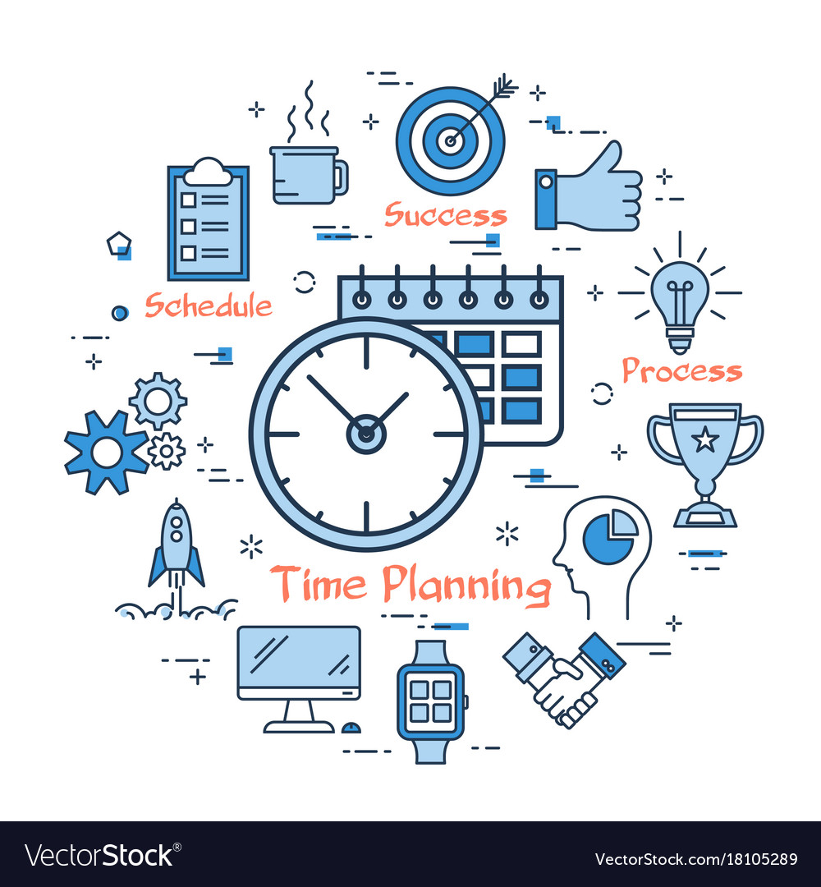
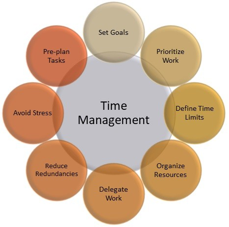

Plānošana ir būtisks elements efektīvam laika pārvaldībai, ļaujot sasniegt mērķus un uzlabot produktivitāti. Šeit ir daži ieteikumi par to, kā veiksmīgi plānot savu laiku:
- Noteik mērķus: Pirms sāc plānot laiku, ir svarīgi noteikt savus galvenos mērķus un prioritātes. Tas palīdzēs fokusēties uz svarīgākajiem uzdevumiem un novērsties no liekiem aizkavējumiem.
- Izveido ikdienas un ilgtermiņa plānus: Katru dienu izceļ svarīgākos uzdevumus, lai tie tiktu veikti pirmie. Šāda pieeja ļauj koncentrēties uz būtisko un palielina efektivitāti.
- Prioritizē uzdevumus: Noteik konkrētu laiku darbam un atpūtai. Šāds grafiks palīdz saglabāt disciplīnu un nodrošina līdzsvaru starp darbu un atpūtu.
- Izveido darba laika grafiku: Noteik konkrētu laiku darbam un atpūtai. Šāds grafiks palīdz saglabāt disciplīnu un nodrošina līdzsvaru starp darbu un atpūtu.
- Izmanto tehnoloģiju: Izmanto dažādas plānošanas un organizēšanas lietotnes, lai uzturētu skaidru pārskatu par saviem uzdevumiem un laika izmantošanu.
- Ieplāno atpūtu: Nepieciešams iekļaut laiku atpūtai, lai saglabātu enerģiju un samazinātu stresu. Atbilstoša atpūta palīdz saglabāt koncentrāciju un motivāciju.
- Pārskati un pielāgo: Periodiski pārskati savu plānu un pielāgo to jaunajiem apstākļiem vai prioritātēm. Plānošana ir elastīgs process, un pielāgošanās ir būtiska.
- Izvairies no pārmērīgas multitaskinga: Koncentrējies uz vienu uzdevumu vienlaicīgi, lai palielinātu efektivitāti. Multitaskingam var būt negatīva ietekme uz uzdevumu kvalitāti un izpildes ātrumu.
- Mēģini delegēt uzdevumus: Ja iespējams, deleģē uzdevumus citiem, lai atbrīvotu savu laiku svarīgākiem uzdevumiem.
- Mācies sakaist savu laiku: Iepazīsti savu produktīvo laiku un centies izvairīties no bezjēdzīgām aktivitātēm šajā periodā.

